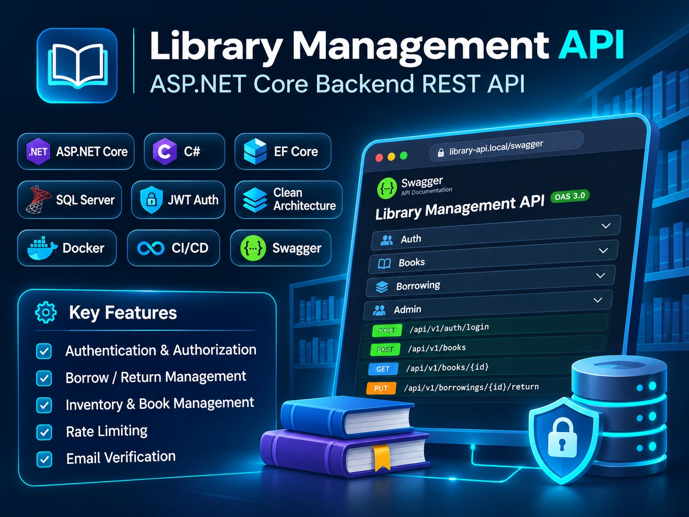
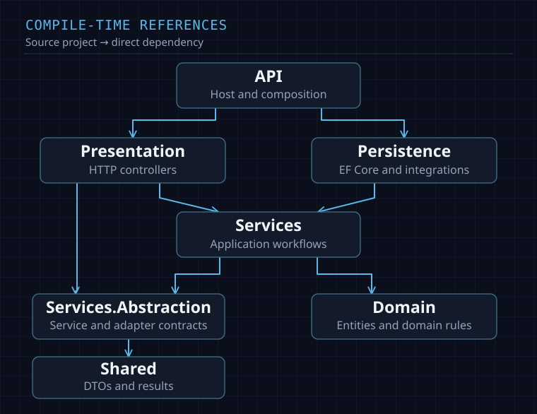
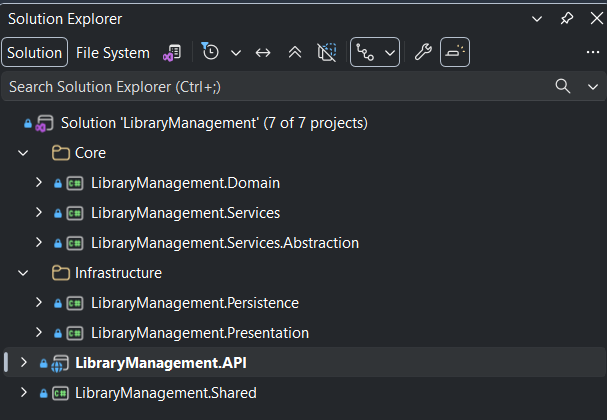
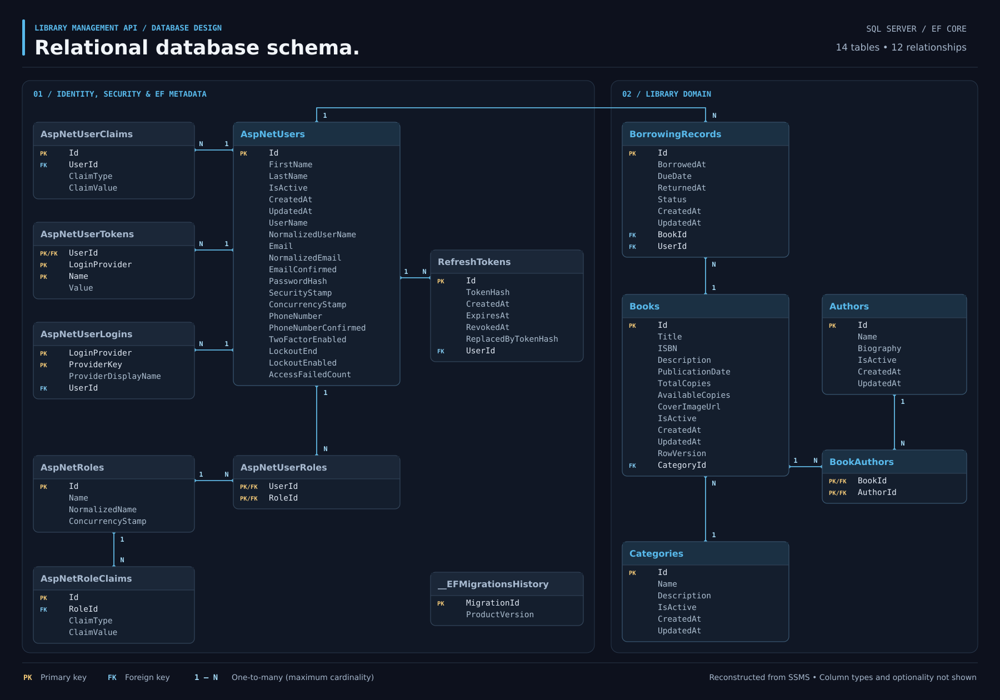
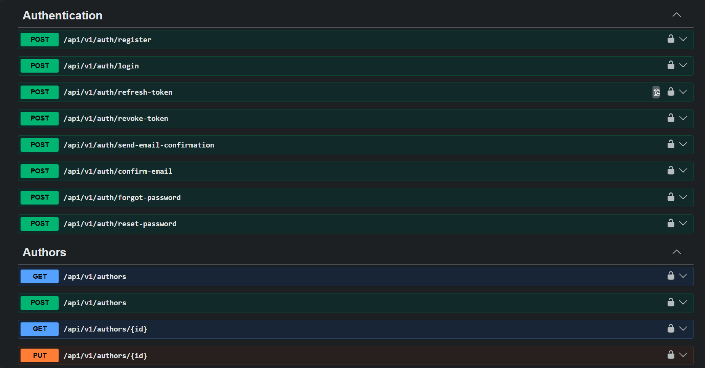
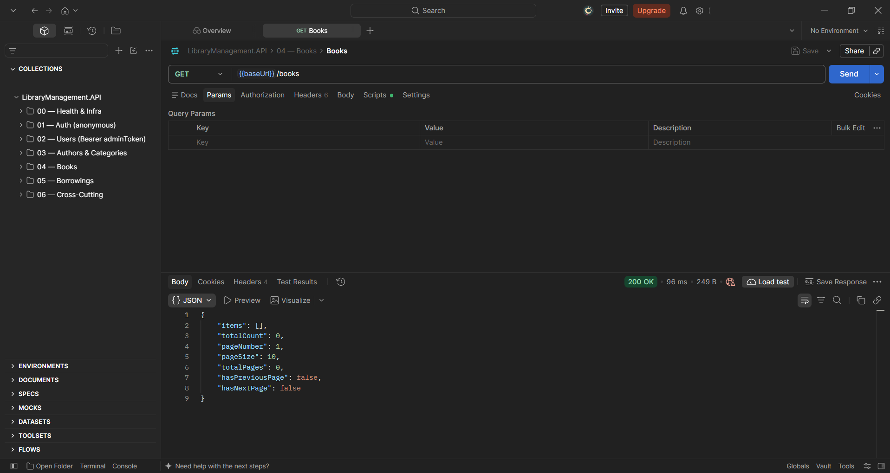
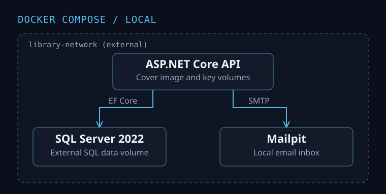
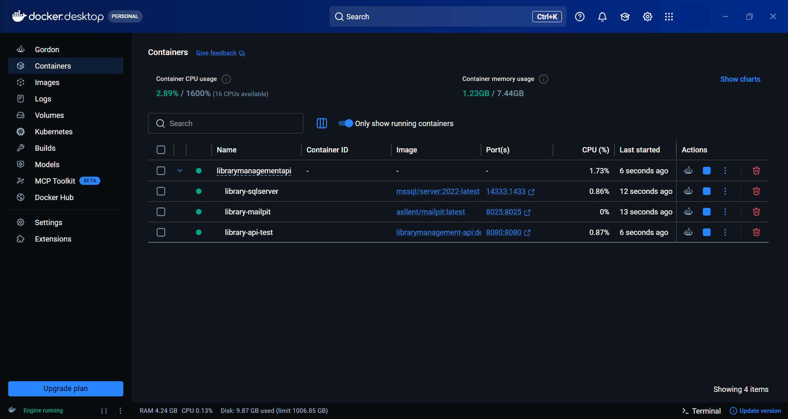
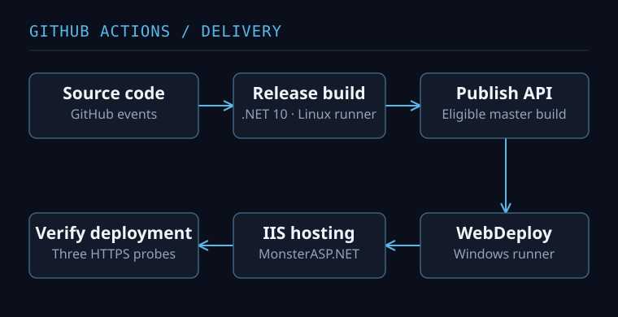
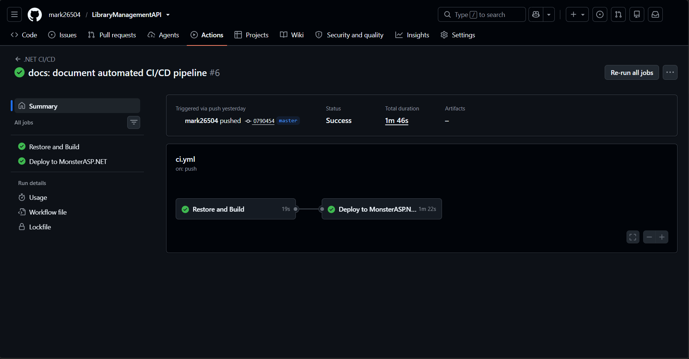

PROJECT / 01
Library Management API.
A secure RESTful API for managing library resources, users, and borrowing workflows, featuring authentication, business validation, containerization, and automated deployment.

- 36 RESTful API Endpoints
- 7 Solution Projects
- .NET 10 Framework
The endpoint count includes 36 HTTP method and path pairs in the v1 OpenAPI document. It excludes the two infrastructure probes at /health and /health/ready.
Project overview
From catalog to circulation
The API gives a library one place to maintain its catalog and account records, track copies, and manage loans from checkout through return. Books are organized by category and can have multiple authors. Members can view their own borrowing history, while authorized staff can manage records and review overdue loans.
My role
I built the backend independently. I designed the API and SQL Server model, implemented authentication and borrowing rules, packaged the local environment with Docker Compose, and configured the automated IIS deployment and verification workflow.
Technology stack
Application
Development, documentation and delivery
System architecture
The solution separates HTTP handling, application rules, persistence, and contracts into seven .NET projects. The arrows in the compile-time diagram point from each referencing project to the project it imports.




Runtime request flow
An HTTP request passes through the API host and enters a Presentation controller. The controller calls an injected service, which uses repository interfaces where it needs data. Persistence implements those interfaces with EF Core and SQL Server. This runtime call direction can differ from the project references.
- LibraryManagement.API
- Starts the application, configures middleware and Swagger, and wires the runtime dependencies.
- LibraryManagement.Presentation
- Defines the HTTP controllers, routes, permissions, and mappings from service results to responses.
- LibraryManagement.Services
- Implements workflows, maps application data with AutoMapper, and generates JWT access tokens.
- LibraryManagement.Services.Abstraction
- Exposes service contracts and interfaces for application dependencies such as identity, token storage, email, and files.
- LibraryManagement.Domain
- Contains library entities, borrowing rules, and repository and Unit of Work interfaces.
- LibraryManagement.Persistence
- Implements EF Core repositories, Identity storage, token storage, MailKit email, file storage, and migrations.
- LibraryManagement.Shared
- Holds DTOs, role and policy names, pagination models, and result types.
Source Solution and project files
Database design
The schema shows 13 tables created by the initial migration and EF Core’s migration history table. The 12 connectors show foreign-key relationships at their maximum cardinality.

Identity and security
AspNetUserRoles joins users and roles using a composite key. Identity also stores claims, logins, and provider tokens. Each refresh token belongs to one user and records a hash, expiry, revocation time, and optional replacement hash.
Catalog and circulation
Each book belongs to one category. BookAuthors links books and authors with a composite key, and each borrowing record refers to one user and one book. The book row stores total and available copies, with a SQL Server RowVersion concurrency token.
Source Initial EF Core migration
Key features
-
Authentication and session renewal
JWT bearer access tokens protect requests. The API stores hashed refresh tokens and issues rotated tokens in a Secure, HttpOnly cookie.
-
Accounts and authorization
ASP.NET Core Identity handles role-based permissions and account changes. Separate email-confirmation and password-reset flows use Identity tokens.
-
Catalog management
Manage books, authors and categories, associate multiple authors with a book, and upload cover images.
-
Borrowing and returns
Validate copy availability and the active-loan limit before checkout. Track due dates, returns, and overdue records.
-
Inventory and concurrency
Book updates and borrowing records are saved together. SQL Server
RowVersionhelps detect competing changes and report conflicts. -
Queries and pagination
Book and borrowing queries support pagination, supported sort orders and filters. Book search covers title, ISBN, and author name.
-
Versioned routes and rate limits
The controllers use an
/api/v1URL prefix. Fixed-window rate limits apply globally, with a tighter policy for authentication. -
Errors, logs and health
Problem Details responses carry a trace ID on the implemented error paths. Serilog logs requests, and separate liveness and database-readiness checks support operations.
Architecture and design patterns
- Onion-style architecture
- Domain has no project references. The application services use contracts and entities, while the host and infrastructure handle HTTP, EF Core, identity, and external services. This keeps the business logic independent of HTTP and EF Core types.
- Repository Pattern
- Domain defines repository interfaces for books, authors, categories, and borrowings. Persistence implements EF Core queries, keeping data access and filtering out of the controllers.
- Unit of Work
IUnitOfWorkgives services a common boundary for repository changes. The implementation commits through a singleApplicationDbContext, so checkout can save the record and inventory update together.- Result Pattern
ResultandResult<T>carry expected failures from services. The base controller maps those errors to HTTP statuses and Problem Details.- Dependency injection
- The API calls the persistence and application registration methods at startup. Controllers receive services through constructor injection, and services receive repository, identity, email, and storage interfaces.
- SOLID principles in practice
- Dependency inversion is visible where borrowing depends on
IUnitOfWork. Separating HTTP handling from borrowing rules and EF queries gives those responsibilities distinct places to change.
API documentation
Swagger groups the versioned API by Authentication, Authors, Books, Borrowing, Categories, and Users. The OpenAPI document describes routes, methods, parameters, request bodies, and response schemas where defined.
Swagger supports JWT bearer authorization. Refresh and revoke flows use the HttpOnly cookie, so the repository documents Postman with a cookie jar for those checks.
Source Deployed OpenAPI document


API testing and validation
The Postman capture shows a books request returning 200 OK with items: [], totalCount: 0, page 1, a page size of 10, and no previous or next page.
The checked-in collection organizes health, authentication, users, catalog, borrowing, and cross-cutting requests. Its scripts capture values for later requests and check parts of the HTTP contract. The testing guide also describes manual checks for validation failures, authorization, borrowing limits, competing inventory updates, and error responses.
These checks exercise the API through HTTP with Postman or manual requests. The reviewed solution and CI workflow provide no evidence of a separate automated unit or integration test suite, a full regression run, or a coverage result.


Docker and containerization
Docker Compose runs the API, SQL Server 2022, and Mailpit for local development. The public API is hosted separately on IIS.




Build and startup
A multi-stage Dockerfile restores and publishes in the .NET 10 SDK image, then copies the Release output to the ASP.NET runtime image and runs it as a non-root user. Compose connects the services over an external network and waits for SQL Server’s health check before starting the API.
Storage and email
Named volumes hold SQL Server data, uploaded covers, and Data Protection keys. The SQL Server volume is managed outside Compose. In development, MailKit sends to Mailpit so confirmation and password-reset emails can be inspected locally.
Sources Dockerfile · Compose configuration
CI/CD and cloud deployment
GitHub Actions restores and builds the .NET 10 solution in Release. The production deployment job runs on eligible master events after a successful build.




Build and release controls
Pushes to master and feature/ci-cd, pull requests targeting master, and manual dispatch can trigger the workflow. Pull requests skip deployment. The Windows job publishes a framework-dependent Release build and uploads it to IIS using WebDeploy.
Hosting and verification
The repository documents MonsterASP.NET IIS hosting with a separate SQL Server 2025 database. After deployment, the workflow expects HTTP 200 from liveness, database readiness, and Swagger over HTTPS. These status checks verify deployment availability.
Public demo limits
The documented free hosting plan has limited resources and no uptime guarantee. Hosted email delivery is unavailable, so use the local Mailpit workflow to validate email confirmation and password reset. The deployment probes cover availability rather than application regression scenarios.
Sources GitHub Actions workflow · Hosting notes
Technical challenges and solutions
- Renewing sessions safely
- A reusable refresh token would extend access if copied. The application stores a hash, checks expiry and account status, and issues a replacement while revoking the prior token. This limits reuse of a revoked token and keeps refresh values out of the response body.
- Keeping inventory consistent
- Two requests can see the same last copy before either saves. Checkout updates the book and adds the borrowing record through one save. SQL Server compares the existing
RowVersionon book updates, and the service maps a conflicting write to HTTP 409 so the caller can retry against current inventory. - Predictable errors
- Validation failures, business conflicts, rate limits, and unhandled exceptions can arise at different points in the request. Dedicated handlers shape them as Problem Details, and a trace ID gives callers a value to correlate with logs.
- Repeatable local checks
- Recreating a container can remove its writable state. Named volumes retain development data, uploaded covers, and key material. Mailpit makes it possible to inspect email flows without sending messages to an external inbox.
- Confirming a deployment is usable
- File transfer success alone says little about whether IIS can start the app or reach the database. The workflow checks liveness, readiness, and Swagger and fails verification when a probe does not return HTTP 200.